Grands travaux · 2016 · Suisse (Romandie, Tessin, Suisse alémanique)
Swiss Knowhow – Grands travaux / Grossprojekte 2016
Numéro de décembre 2016 consacré aux grands chantiers d’infrastructure en Suisse. Il réunit les interviews des grandes associations de la construction et de l’ingénierie (Infra Suisse, usic, VSS, bauenschweiz), une série de fiches de projets routiers et ferroviaires de l’OFROU et des CFF, ainsi que les portraits de bureaux d’ingénieurs, d’entreprises spécialisées et de compagnies de transports publics de Romandie, du Tessin et de Suisse alémanique.
Sommaire · 40 articles

Infra Suisse – Interview mit Matthias Forster, Geschäftsführer
L’association faîtière des constructeurs d’infrastructures

Les prestations d’ingénieurs sont des services intellectuels, pas des marchandises
Interview de Mario Marti, Secrétaire général de l’usic

VSS – Schweizerischer Verband der Strassen- und Verkehrsfachleute
Interview mit Dr. Dieter Wepf, Präsident
bauenschweiz – Interview mit Direktor Dr. Benjamin Wittwer
La faîtière de l’économie suisse de la construction
Transitec, ingénieurs-conseils – Un bureau d’études généraliste dans le domaine de la mobilité
Le plus ancien bureau suisse spécialisé en mobilité
 Dossier
DossierA13 Circonvallazione di Roveredo
Travaux routiers et autoroutiers
DossierA9 Sion et environs
Travaux de réfection entre Vétroz et Uvrier
DossierA9 Simplon
Remise en état progressive de la route du col
DossierA5 Colombier - Cornaux
Assainissement de l’autoroute à travers l’agglomération de Neuchâtel
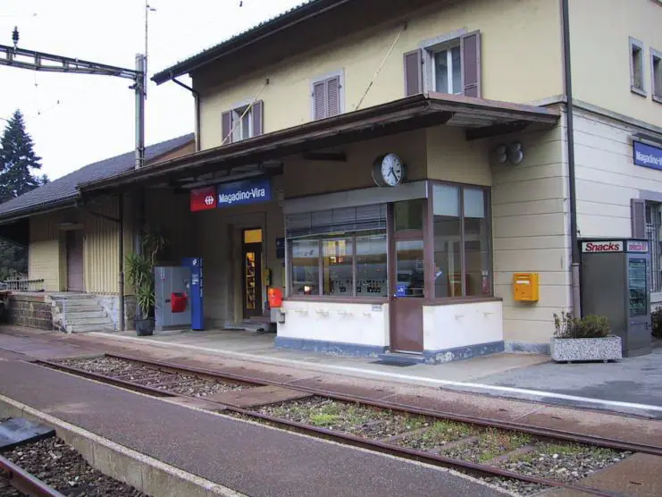
DossierModernizzazione delle infrastrutture ferroviarie del Gambarogno
Automatisation de la ligne Bellinzone–Luino
Bern Ost: Verkürzung der Zugfolgezeit
Deux minutes d’intervalle entre Wankdorf et Berne
FMV: Ferrovia Mendrisio-Stabio-Varese e Malpensa
Nouvelle liaison ferroviaire transfrontalière
Gümligen-Thun: Verkürzung Zugfolgezeiten
Programme ZEB entre Berne et Thoune
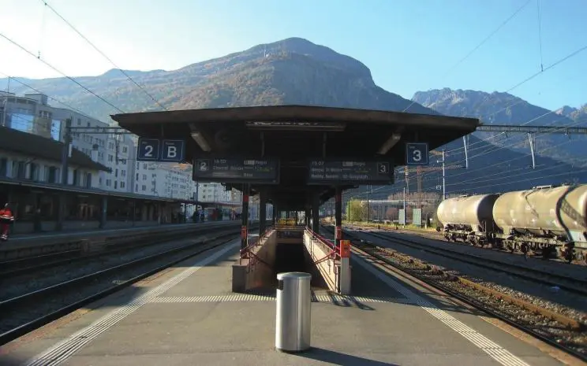
DossierMartigny : extension des quais et adaptation des voies
Modernisation de la gare de Martigny
Léman 2030 - Nœud de Genève Mies-Chambésy
Vers la cadence au quart d’heure entre Coppet et Genève
Bellinzona-Giubiasco prolungamento del binario 36
Une troisième voie sur l’axe du Saint-Gothard
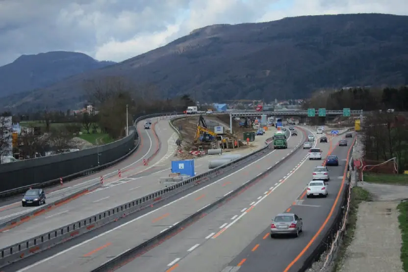
InterviewRothpletz, Lienhard + Cie AG
Interview mit Werner Kradolfer und Alex Veigl / Entretien avec Werner Kradolfer et Alex Veigl
 Interview
InterviewTPN - Transports publics de la région nyonnaise SA : accompagner l’essor d’une région
Entretien avec M. Richard Zaugg, directeur des TPN
 Interview
InterviewTransN, Transports Publics Neuchâtelois SA – Des sauts qualitatifs importants
Entretien avec M. Pascal Vuilleumier, directeur de transN
 Publireportage
PublireportageAJS ingénieurs civils SA – Ensemble, façonnons un avenir audacieux
Portrait par M. David Quesada, sous-directeur
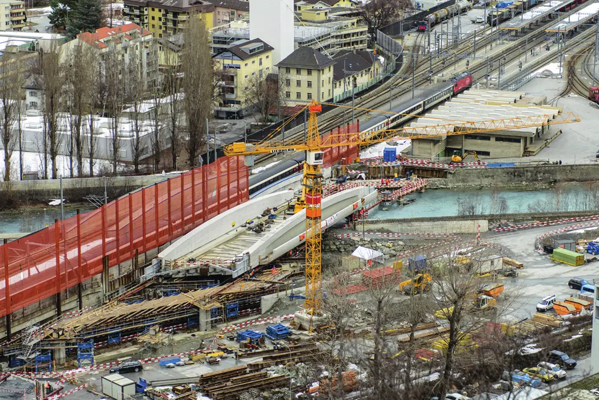
InterviewDiggelmann + Partner AG
Interview mit Mitinhaber und Co-Geschäftsleiter Martin Diggelmann
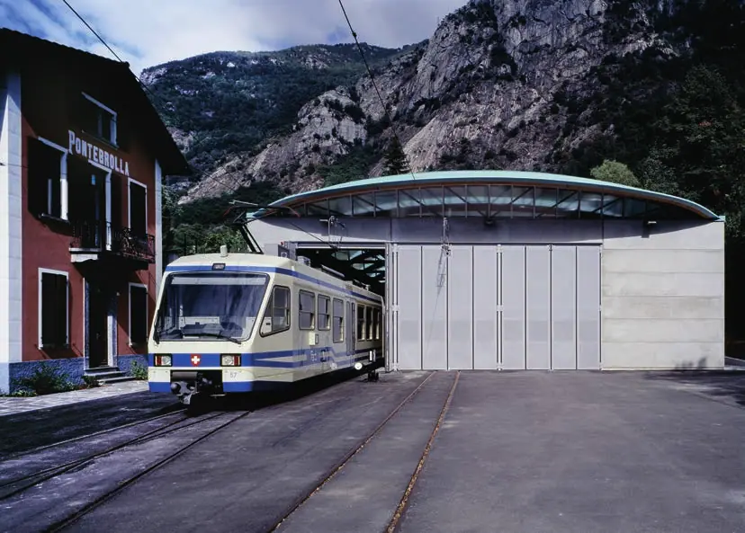
PublireportageFART, Ferrovie Autolinee Regionali Ticinesi SA – Professionalità per affrontare nuove sfide
Neue Herausforderungen professionell angehen
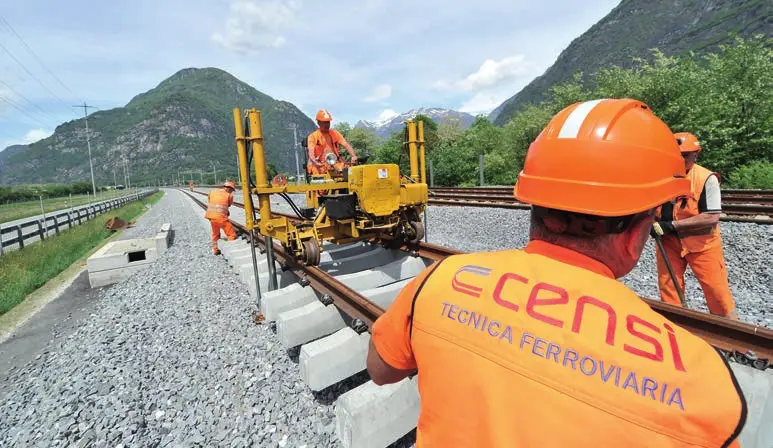
PublireportageFratelli Censi SA di Grono – Da 65 anni su binari sicuri
Seit 65 Jahren auf sicheren Gleisen
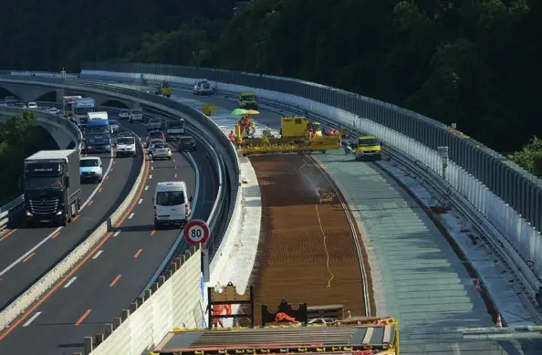
PublireportageMonod-Piguet + Associés Ingénieurs Conseils SA – Le goût des projets complexes
Ingénierie des structures, des infrastructures et planification générale
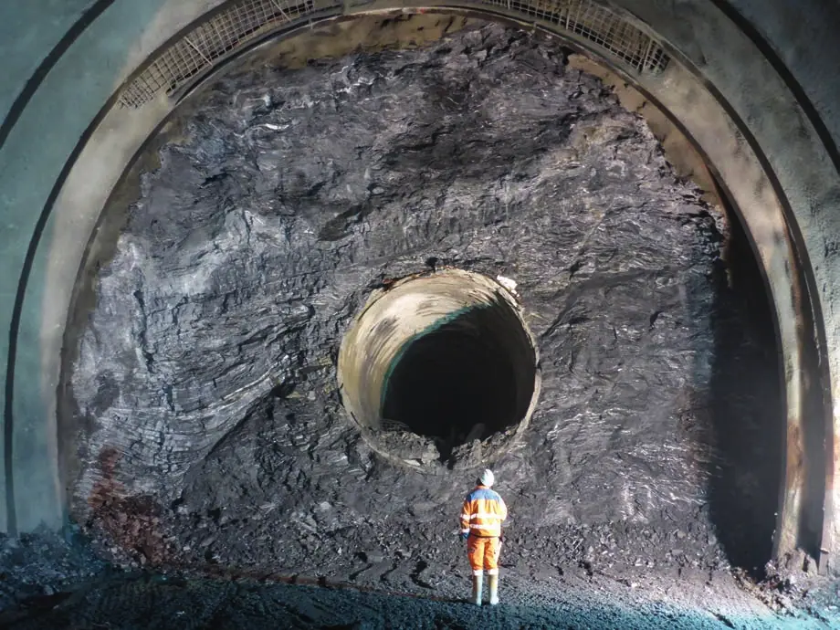
PublireportageNorbert SA – Géologie de l’ingénieur et hydrogéologie
Une lecture détaillée du sous-sol pour les grands chantiers romands
PublireportageLe chemin de fer Nyon - St-Cergue - Morez SA – La colonne vertébrale du district
Das Rückgrat der Region
 Publireportage
PublireportageAnastasi & Partners SA – Continuità nel solco del passato
Un bureau d’ingénieurs tessinois fête ses trente ans
PublireportageBernasconi e Forrer Ingegneria e misurazioni SA – Quando ogni millimetro ha valore
Géomètres du Ceneri et du second tube du Gothard
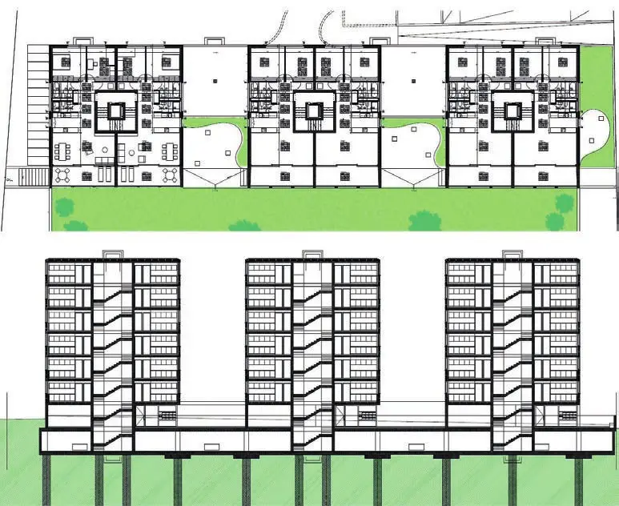
PublireportageBonalumi e Ferrari SA di Giubiasco – Uno studio d’ingegneria attivo dal 1987
Statique, hydraulique, acoustique et trafic

Ecoscan SA – Le spécialiste des études en environnement
Plus de 2000 projets environnementaux en Romandie
Laboroute SA – Un laboratoire de pointe au service de la construction routière
Béton, granulats et enrobés bitumineux
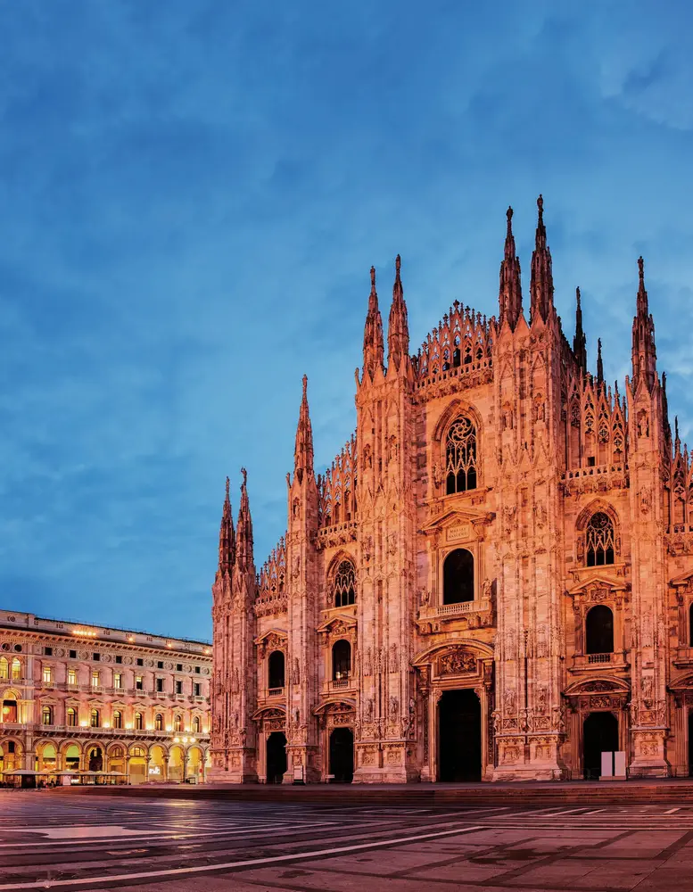
PublireportageMarcionelli & Winkler + Partners SA – Raccontare una storia di un’azienda
mawi, ingegneri civili e pianificatori
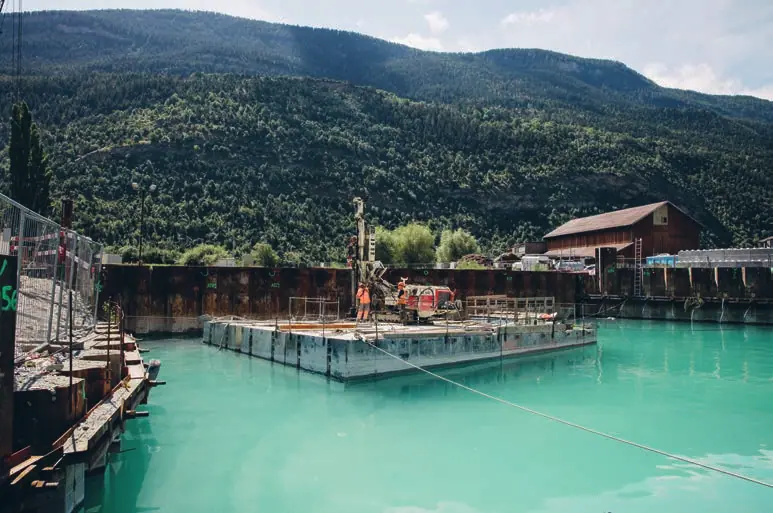
PublireportagePaler SA, specialista dei lavori del sottosuolo – Àncora la vostra sicurezza
Fondations spéciales et géotechnique
RGR Ingénieurs Conseils SA – Gérer le trafic autoroutier, un enjeu majeur pour la mobilité
Robert-Grandpierre & Rapp SA
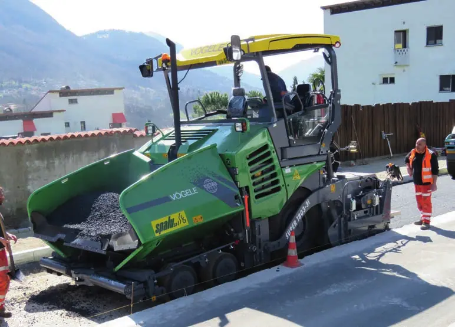
PublireportageSPALU SA, in attività dal 1933 – Quattro generazioni di impresari costruttori
Revêtements routiers, étanchéité et génie civil à Lugano
 Publireportage
PublireportageTrasporti Pubblici Luganesi SA – Si alza il sipario sulla nuova funicolare
Le funiculaire Piazza Cioccaro – gare CFF de Lugano
Hygin Debons – Serrurerie, construction métallique
Dispositifs routiers, parois antibruit et ouvrages métalliques
Klemmfix (Schweiz) AG – Ihr Partner für Signalisation, Markierung und Winterdienstprodukte
Technique de la circulation
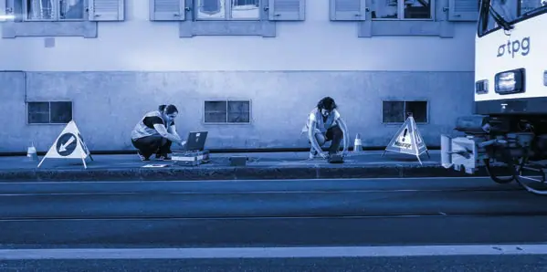
InterviewPoseidon Engineering SA, Geophysical Surveys
Extensive geognostic characterisation for all types of terrain
Résonance Ingénieurs-Conseils SA – Notre spécialisation fait la différence
Génie parasismique, sismologie et vibrations
Entreprises de ce numéro · 35

AJS Ingénieurs civils SA
Bureau d’ingénieurs civils
Anastasi & Partners SA
Bureau d’ingénierie civile
bauenschweiz
Organisation faîtière de la construction
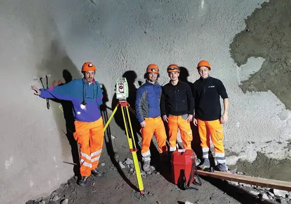
Bernasconi e Forrer Ingegneria e misurazioni SA
Ingénieurs géomètres – mensuration
CFF SA Projets région Ouest
Chemins de fer – projets d’infrastructure
Diggelmann + Partner AG
Bureau d’ingénieurs civils (ponts, génie civil urbain)
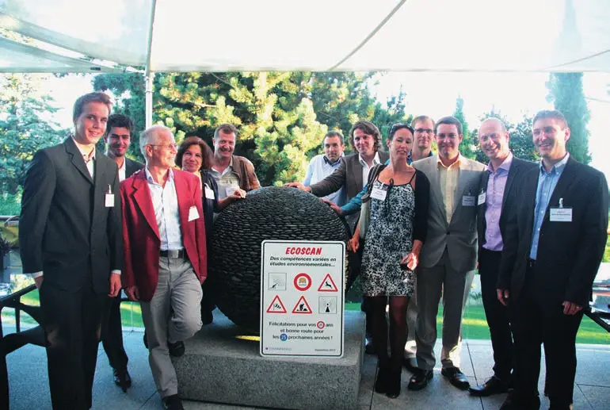
Ecoscan SA
Bureau d’études en environnement
FART, Ferrovie Autolinee Regionali Ticinesi SA
Transports publics (train, bus, téléphériques)
FFS SA Infrastruttura Progetti Regione Sud
Chemins de fer – projets d’infrastructure
Fratelli Censi SA
Construction, entretien et logistique ferroviaires
Hygin Debons Serrurerie - Construction métallique
Serrurerie et construction métallique
Infra Suisse
Association faîtière des constructeurs d’infrastructures
Klemmfix (Schweiz) AG
Signalisation, marquage et service hivernal
Laboroute SA
Laboratoire de matériaux routiers
mawi Marcionelli & Winkler + Partners SA
Ingénieurs civils et planificateurs
MONOD-PIGUET + ASSOCIES Ingénieurs Conseils S.A.
Ingénierie civile et planification générale
NORBERT SA Géologues conseils
Géologie de l’ingénieur et hydrogéologie
NStCM – Chemin de fer Nyon - St-Cergue - Morez
Transport ferroviaire
Office fédéral des routes (OFROU)
Administration fédérale – routes nationales
PALER Lavori Speciali del Sottosuolo SA
Travaux spéciaux du sous-sol
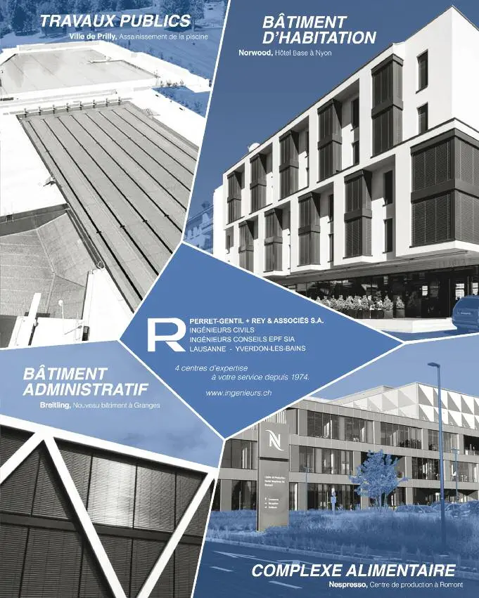
Perret Gentil + Rey & Associés
Non précisé
POSEIDON Engineering SA
Géophysique et études territoriales
Résonance Ingénieurs-Conseils SA
Génie parasismique, sismologie et vibrations
RGR SA
Ingénierie de la gestion du trafic et de la mobilité
Rothpletz, Lienhard + Cie AG
Ingénierie civile et entreprise de construction
SBB Infrastruktur Projekte Region Mitte
Chemins de fer – projets d’infrastructure
SPALU SA
Revêtements routiers, étanchéité, bâtiment et génie civil
Studio d’ingegneria Bonalumi e Ferrari SA
Bureau d’ingénierie (statique, hydraulique, acoustique, trafic)
Studio d’ingegneria Ezio Tarchini SA
Bureau d’ingénierie civile
TPL – Trasporti Pubblici Luganesi SA
Transports publics urbains
TPN – Transports publics de la région nyonnaise SA
Transports publics (bus)
Transitec Ingénieurs-Conseils SA
Bureau d’études en mobilité et transports
TransN Transports Publics Neuchâtelois SA
Transports publics (bus, trains, funiculaires)
usic – Union Suisse des Sociétés d’Ingénieurs-Conseils
Organisation patronale des bureaux d’ingénieurs
VSS – Schweizerischer Verband der Strassen- und Verkehrsfachleute
Association professionnelle et normalisation routière
Aucun résultat.